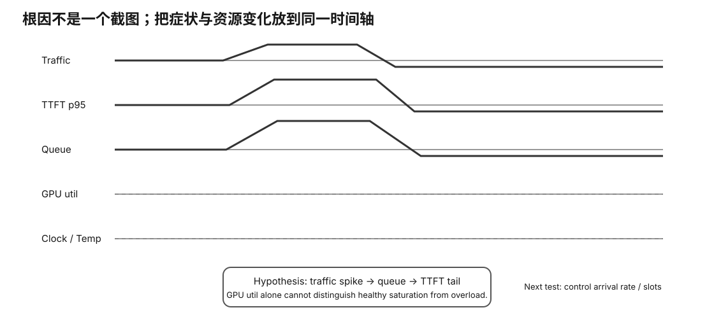

开始前，你应该能读懂最基本的服务信号：latency、traffic、errors、saturation，并知道 GPU utilization、clock、temperature、queue、slot 与 KV 都只是观测信号，本身不是根因。
用户说“今天模型突然很慢”，同时你看到 GPU 100%。这个现象既可能是健康的满负载工作，也可能伴随 queue 堆积、thermal throttling、内存压力或错误重试。单个 dashboard 数字无法区分这些路径。
真正的问题是：怎样把用户症状、事件时间线和多类 telemetry 拼成可证伪的 hypothesis，并用下一条最有区分度的证据决定该查 queue、GPU、memory、thermal 还是软件变更？可观测性的目标是缩小原因空间，而不是堆更多图表。

GPU util = 100%
可能代表：
GPU 正在满负荷干有用工作
如果：
TTFT/ITL SLO 都正常 没有 errors clock 正常 temperature 正常
那它甚至可能是你想要的状态。
Latency Traffic Errors Saturation
放到本地 LLM：
TTFT / ITL / E2E req/s / tok/s HTTP/OOM/SLO miss queue / slots / KV / GPU / thermal
TTFT ↑↑ requests_deferred ↑ GPU util ↑ clock 基本不变 ITL 基本不变
更合理的假设：
queue/admission pressure
不是：
GPU 突然坏了
已经拿到 slot 的请求继续正常 decode。
真正倒霉的是：
还在 queue 里的用户
所以先伤 TTFT。
temp: 70 → 88 C clock: 1800 → 1200 MHz ITL: 50 → 95 ms
这时：
thermal/power/clock throttling
变成值得验证的 hypothesis。
仍然不能只凭相关性就宣布根因。
23.0 / 24 GiB 23.1 23.0 23.1
但：
TTFT stable ITL stable no OOM no growth trend
这不能叫 memory leak。
同样 workload state → VRAM 一轮比一轮高 → 不释放 → 最后 OOM
还要结合 runtime allocator/cache 行为。
可能卡在：
CPU tokenizer storage host-device sync tiny batches network/client scheduler
12:00:00 TTFT 200 deferred 0 clock 1800 temp65 12:00:10 TTFT 300 deferred 2 clock 1800 temp68 12:00:20 TTFT 600 deferred 5 clock 1780 temp70 12:00:30 TTFT1200 deferred 9 clock 1780 temp72
你开始能看到事件一起怎么变化。
Metrics: 趋势、率、饱和 Logs: 错误、异常、启动失败 Request trace: 每个用户请求时间线
三类 Evidence 互补。
更有意义：
TTFT p95 连续越 SLO requests_deferred 持续增加 error rate 超限 health 不 ready OOM 风险
然后 resource telemetry 帮你解释。
release identity workload client trace server metrics GPU telemetry logs hypothesis action follow-up A/B
这比：
“昨天好像特别慢”
有用得多。
硬件门槛：L0 模拟/设计主路径；真实服务或 Linux/NVIDIA 机器是增强。
成本：0 元。
风险：safe；不通过危险电气/固件修改来“制造”故障。
做 Experiment 76：incident diagnosis cases；真实服务做 Experiment 77：real incident evidence。
完成一个 incident report：symptom、timeline、至少三个 hypothesis、支持/反驳证据、最小复现/下一测量、最终结论与 non-claims。
换 OS、runtime 或 GPU 后，先重建 timeline + identity + measurement boundary，再判断“更快/更稳/更省电”是否成立。
symptom → timeline → correlated signals → hypothesis → discriminating test → result → next hypothesis / fix
指标的价值在于帮助你区分假设，而不是让图表越多越专业。
至少有多种候选原因：
A thermal/power throttle B concurrency increased C context grew / KV pressure D CPU/RAM/swap interference E backend/kernel changed F another process using GPU
只看 GPU utilization 不能区分这些。你需要时间对齐的 clocks、power、temperature、active requests、context/KV、RAM/swap、runtime identity 等信号。
重要操作应该进入时间线：
14:01 deploy new runtime 14:03 first request 14:08 concurrency test begins 14:12 TG degradation begins 14:13 thermal limiter appears
没有事件时间线，监控图很容易变成“事后看云彩猜天气”。
再加模型服务特有的 PP/TG、cache hit、context distribution 等。
高频采样、verbose logging、profile 工具本身可能增加 CPU/I/O 开销。正式 benchmark 要记录监控采样频率，并尽量保持 A/B 一致。
symptom: first bad timestamp: user-visible metric: recent change/event: hypothesis A: evidence for/against: smallest discriminating test: result: next action:
“GPU 100%”“VRAM 95%”只是 signal，不是 hypothesis。好 hypothesis 应该能被新 Evidence 推翻，例如“TG 下降来自 thermal throttle”就应预测 clock/limiter/temperature 与 workload 时间线存在一致关系。
至少同时检查：
如果只有温度升高但 clock 不变、用户 latency 不变，就没有足够证据把高温宣布为根因。
保存时间同步的 request metrics、system/GPU telemetry、关键 logs、deploy/config events 与监控采样配置。正式 A/B 中监控本身也要固定，因为更高采样频率和 profiler 可能改变系统负载。
相关信号不能自动证明因果。Observability 的目标是更快缩小假设空间；真正 root cause 仍需复现、对照或能够区分竞争假设的实验。